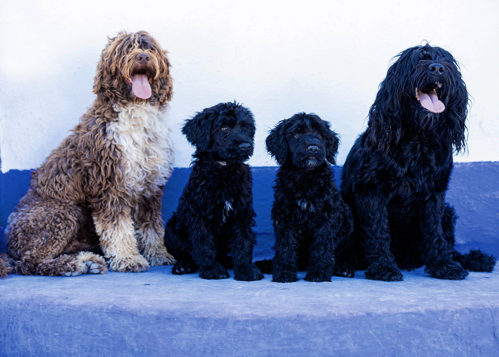
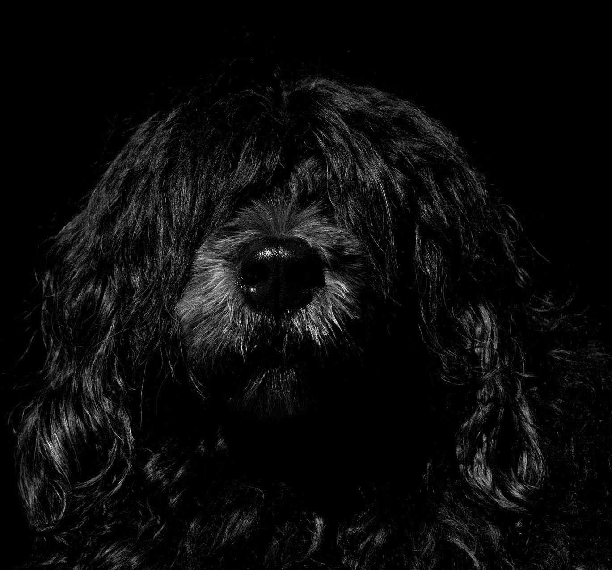
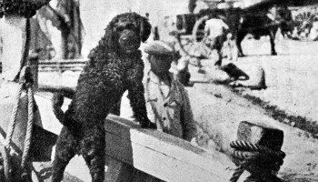
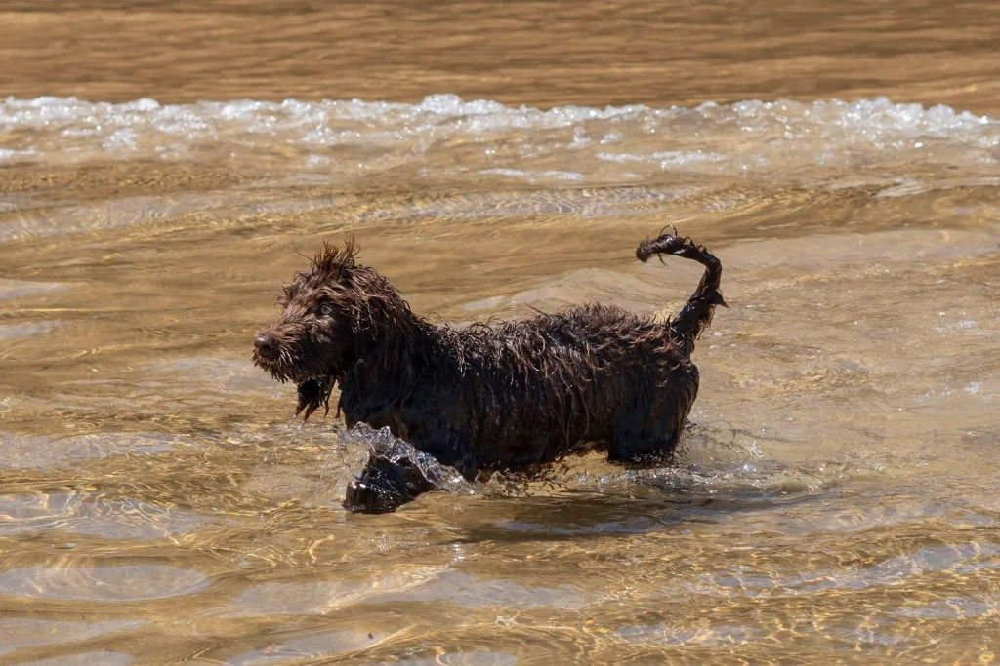
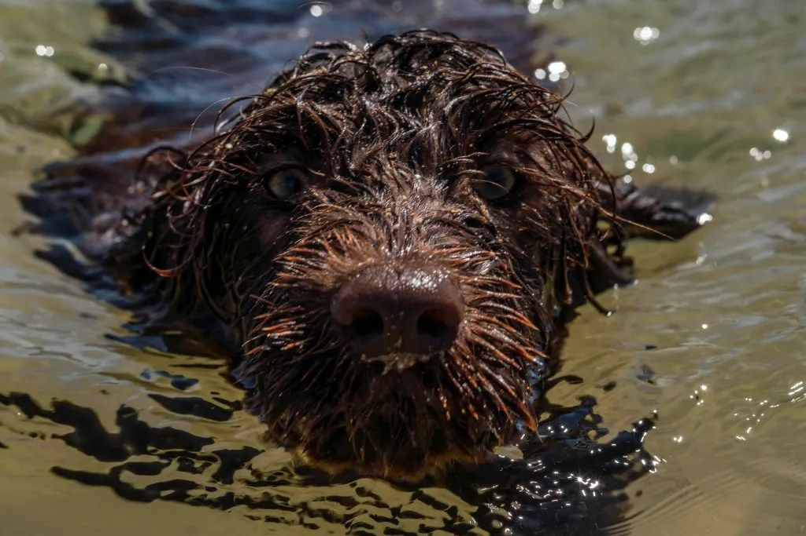
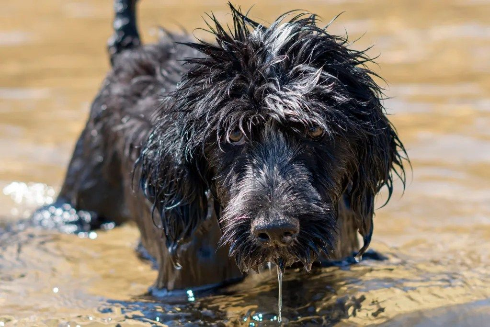
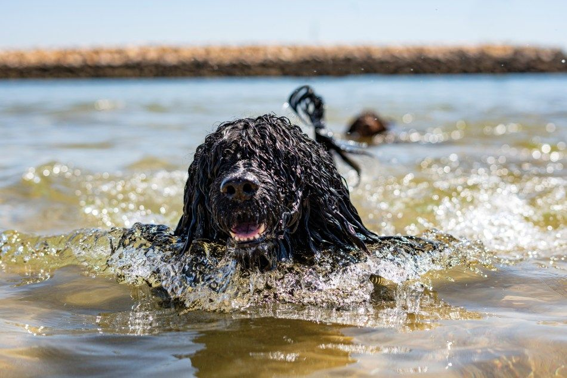
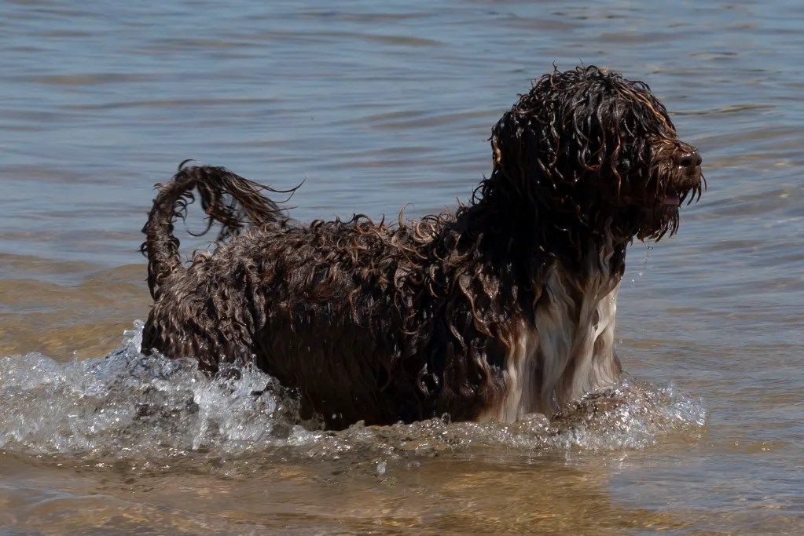
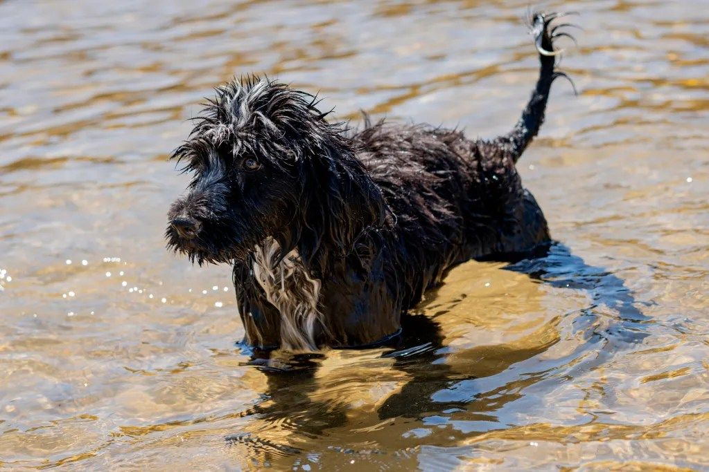

Cão de Água Português · Lagos, Algarve
Nascidos para a água.
Nutridos com amor.
Na Casa da Buba criamos Cães de Água Portugueses como sempre viveram na costa algarvia: perto do mar, no meio da família, com tempo para crescer.

A casa
Uma casa contada
pelos seus cães.
A história da Casa da Buba não se escreve com datas. Escreve-se com nomes.
-
1990
Buba
A primeira. Ia connosco para todo o lado, e foi com ela que aprendemos o que é viver com um Cão de Água.
-
Anos 90
Buba II
A matriarca que deu nome à casa. Bonita como poucas, nunca gostou de concursos: preferia receber quem nos visitava.
-
2000
Caracóis & Linda
A primeira ninhada, com o Caracóis como pai. Dela nasceu a Linda, e o nome não foi por acaso.
-
2002
Petra
A ninhada da Petra, uma das cadelas que marcaram a casa para sempre.
-
c. 2006
O primeiro salva-vidas
A viver à beira-mar, começámos a preparar os nossos cães para o salvamento aquático.
-
2012
Um fiorde em Oslo
Doze Cães de Água num fiorde norueguês: a primeira vez que levámos o trabalho na água lá para fora.
-
2013
Da Noruega à Suíça
48 cães em três cidades norueguesas, com a Linda e o Dylan a ajudar a ensinar. Seguiram-se a Finlândia, os Países Baixos e a Suíça.
-
Hoje
Petra Sarabi, Esterella, Dylan…
Continuam a história. E na primavera de 2027 chega a próxima ninhada.

“Gostam de sentir o calor humano, abraçam as pessoas. São cães de emoção, são filhos, são família.”
A raça
Um cão de
duas velocidades.
Tranquilo, atento, colado à família. Dá-se bem com crianças e com os mais velhos, e gosta de estar onde as pessoas estão.
Lá fora é outro cão. Para ele, brincar é trabalho, e o trabalho é a água: nadar, mergulhar, ir buscar, voltar e pedir mais.


Feito para o mar
- 01
Membranas entre os dedos
Patas palmadas que fazem dele um nadador nato.
- 02
Mergulha a fôlego
Fecha a glote, suspende a respiração e mantém os olhos abertos debaixo de água.
- 03
Pelo sem subpelo
Cresce continuamente, sem muda. Ondulado ou encaracolado.
- 04
Três níveis de alerta
Herdou a guarda dos barcos: primeiro rosna, depois eriça o pelo, só no fim age.

Da proa dos barcos
A primeira referência em Portugal é de 1297: um monge conta como um cão de pelo negro trouxe do mar um marinheiro moribundo. Em 1922, em Olhão, Raul Brandão viu caíques com 25 homens e dois cães, que «ganhavam tanto como os homens».
Mergulhavam para recuperar o que caía ao mar, apanhavam o peixe que fugia das redes, avisavam quando o cerco estava cheio e guardavam os barcos fundeados. Com os motores, foram desaparecendo da pesca algarvia a partir dos anos 1930.
Arquivo · fotografia de autor desconhecido · Texto a partir de Rodrigo O. Pinto, A Magazine, 2023Os cães
Cada um com o seu feitio.
Todos da família.
-
Cédula n.º 01
Petra Sarabi
- Cor
- Preto
- Pelo
- Encaracolado
Serena em casa, imparável na água.
-
Cédula n.º 02

Dylan
- Cor
- Castanho e branco
- Pelo
- Encaracolado
O primeiro a chegar à porta.
-
Cédula n.º 03

Esterella
- Cor
- Preto e branco
- Pelo
- Ondulado
Atenta a tudo, desconfiada de nada.
-
Cédula n.º 04

Noitte Di Fiaba
- Cor
- Castanho
- Pelo
- Ondulado
Olhos no horizonte, sempre.
-
Cédula n.º 05

Gigi
- Cor
- Castanho
- Pelo
- Encaracolado
A mais nova da casa.
-
Cédula n.º 06

Amora
- Cor
- Preto, peito branco
- Pelo
- Ondulado
Pequena no tamanho, grande na água.
Diário da ninhada
Primavera de 2027.
Cada ninhada tem um diário. Quem está na lista de espera recebe, semana a semana, fotografias e notícias: do planeamento até ao dia em que o cachorro vai para casa.

Planeamento
Escolha dos pais, testes de saúde e conversas com as famílias.
Acasalamento
Partilhamos os pais e a genealogia no diário.
Nascimento
Primeiras fotografias, primeiros nomes.
Primeiras semanas
Crescem em casa, com sons, pessoas e, claro, água.
Para casa
Com pelo menos oito semanas, cada cachorro parte com a sua cédula.
Como chegar a um cachorro
- ConversaConhecemo-nos ao telefone ou por mensagem.
- VisitaVem a Lagos conhecer os pais e a casa.
- Lista de esperaReserva o lugar e passa a receber o diário.
- Escolha a parEscolhemos juntos o cachorro cujo feitio combina com a sua casa.
- Para sempreContinuamos por perto durante toda a vida do cão.
Projeto Cão Salva-Vidas
Quando alguém
precisa, vão a nado.
Há cerca de quinze anos, a viver à beira-mar em Lagos, começámos a preparar os nossos cães para o salvamento aquático. Em Espanha e Itália o Cão de Água já trabalha nas praias. Em Portugal ainda espera por reconhecimento, e nós continuamos a treinar.
Apoiar o projeto →

Visitas
Venha conhecê-los a Lagos.
A Casa da Buba faz parte do roteiro cultural do Algarve. Recebemos famílias, curiosos e grupos que querem ver de perto um Cão de Água a fazer aquilo para que nasceu.
- Famílias interessadas na raça
- Grupos e excursões, com marcação
- Demonstrações na água, na época balnear








Contacto
Vamos conversar.
Quatro perguntas rápidas para lhe respondermos com tempo e com cuidado.